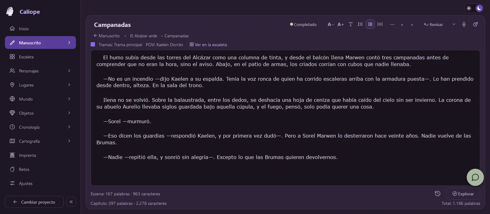
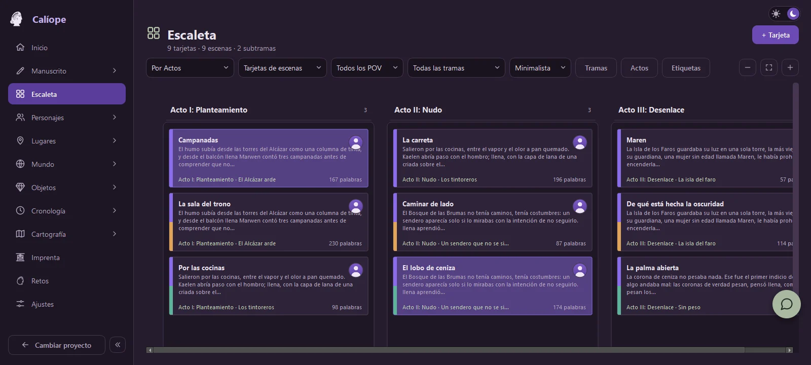
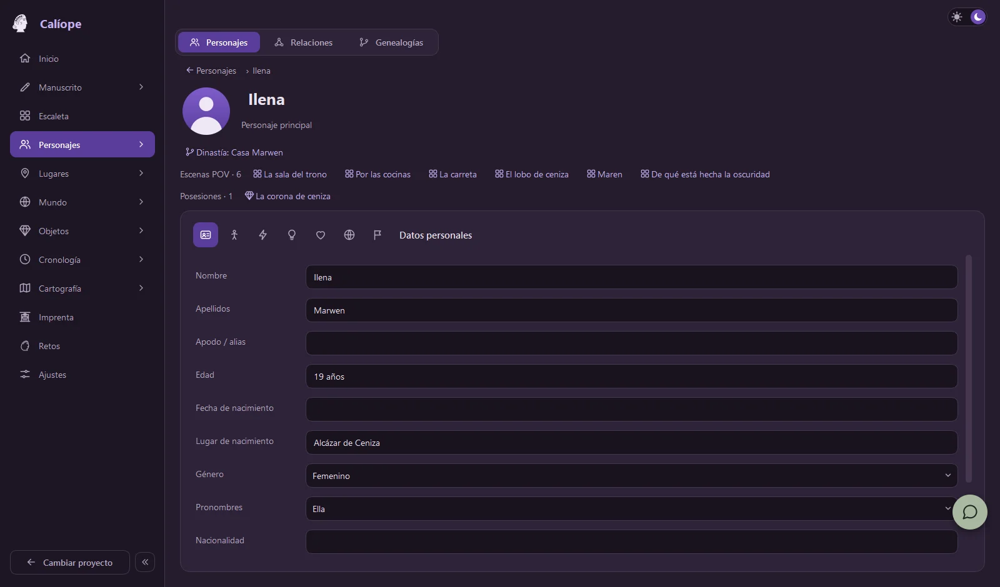
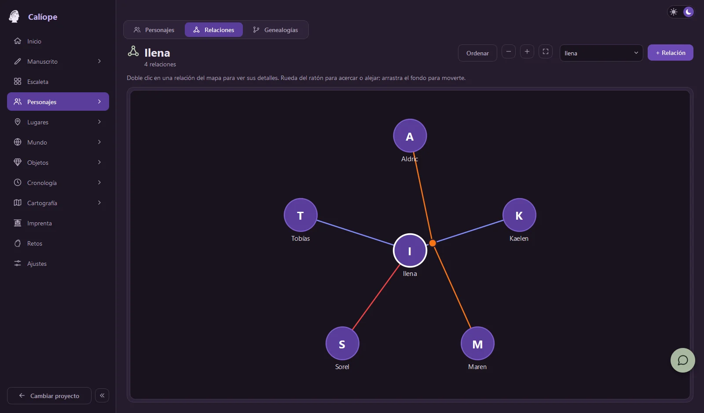
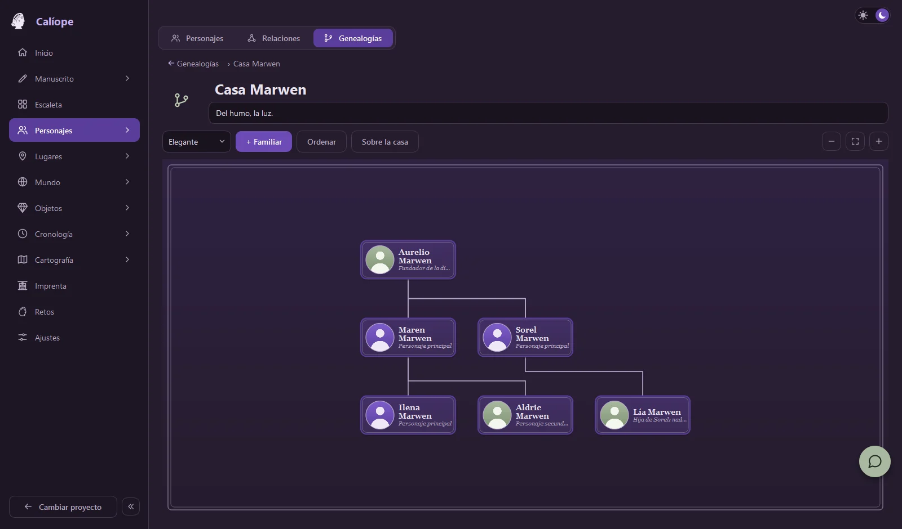
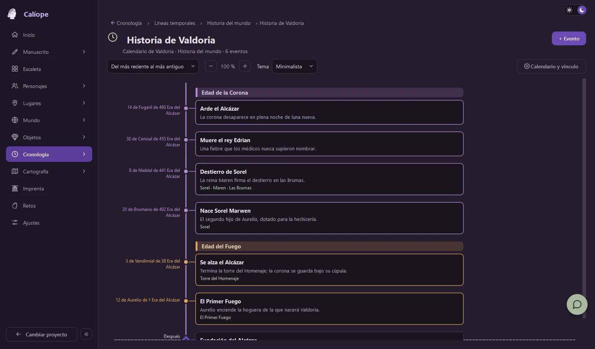
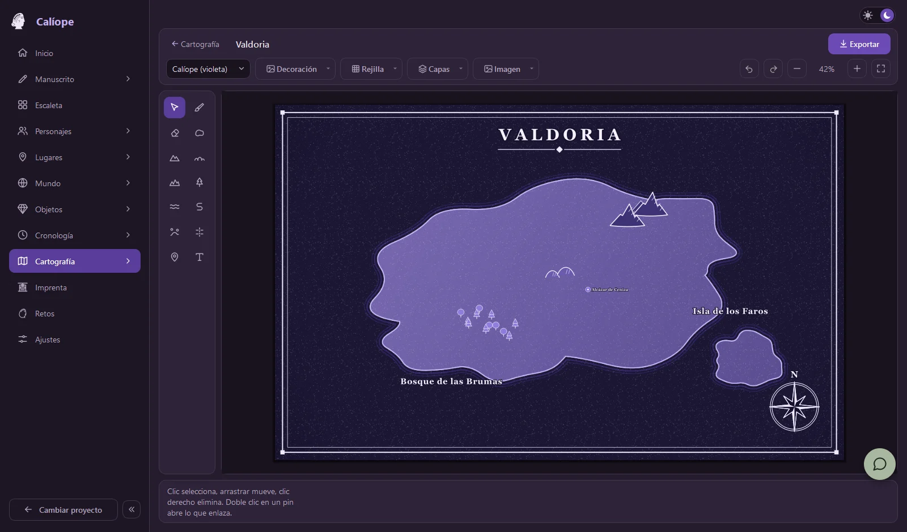
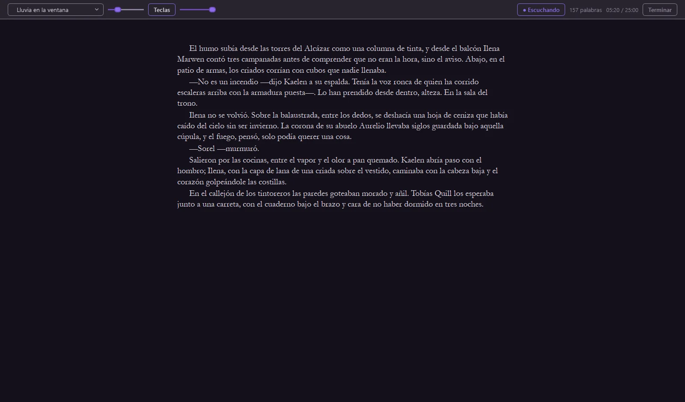

Cada parte de tu historia tiene su sitio, y todas hablan entre sí.
Manuscrito
Partes, capítulos y escenas en un editor limpio. Estados, versiones con comparador, corrector local que revisas cuando quieres e importación desde Word, PDF o texto.
Escaleta
Un tablero de tarjetas por actos, partes, capítulos, tramas o personaje (POV). Mover una tarjeta mueve la escena en el manuscrito.
Personajes, lugares y objetos
Fichas a medida con autocompletado y enlaces cruzados. «Explorar» te deja consultar tu mundo sin salir de la escena.
Mundo narrativo
Universo, mitología, bestiario, historia, sistemas y civilizaciones, con campos pensados para cada tipo de entrada.
Relaciones y dinastías
Un mapa interactivo de vínculos (más de noventa tipos) y árboles genealógicos sin cruces, sincronizados entre sí.
Cronología
Líneas temporales con doce calendarios históricos o el tuyo: eras, meses, semanas y edades, con imágenes y menciones.
Cartografía
Mapas de mundos y planos de ciudades con estilos, rejilla, símbolos y pines que abren la ficha del lugar. Exporta a imagen.
Universos y Sagas
Agrupa libros en una saga y comparte personajes, lugares y mundo entre ellos, con el manuscrito de cada uno aparte.
Análisis y Modo Ultra Foco
Palabras, legibilidad, diálogo y vocabulario de tu manuscrito, y un modo a pantalla completa con ambientes y máquina de escribir reales.
Tema oscuro y claroEspañol e inglésCorrector y sinónimos offlineWindows y macOS
La interfaz
Míralo por dentro
Elige una pestaña para ver cada área de Calíope.

Editor limpio con estados, historial de versiones y corrector bajo demanda.

La escaleta por actos, con subtramas de color y tarjetas de escena o de capítulo.

Fichas enlazadas: del personaje a su dinastía, sus escenas y lo que posee.

Quién es quién para quién, con vínculos que se adaptan al género de cada ficha.

Árboles con líneas rectas y sin cruces, en tres estilos.

Líneas temporales con un calendario inventado y edades a tu medida.

Mapas de mundos y ciudades con pines enlazados a tus fichas.
Imprenta
Del manuscrito al libro, sin salir de Calíope
Compila tu novela con una maquetación cuidada y llévala a tus lectores o a tu e-reader, todo en local.
EPUB 3AZW3 / MOBIDOCXPDF
Fuentes, sangrías y alineación de títulos a tu gusto.
Citas y epígrafes en Partes y Capítulos, con posición (antes o después del título) y alineación.
Capitulares, numeración «Capítulo IV», separadores y esquinas vectoriales como adornos.
Portada, notas de la autoría, índice y, si hay saga, el nombre de la saga.
AZW3 requiere tener Calibre instalado; sin él, Calíope genera un MOBI propio.
«Quien nombra la ceniza, la hace arder.»— Proverbio de Marwen
Capítulo II
La corona de ceniza
El viento traía el olor a humo desde el valle, y Lía supo, antes de abrir los ojos, que la ciudad ya no era suya. Se incorporó despacio, con la mano sobre la empuñadura, y escuchó cómo las campanas dejaban de repicar una a una.
—No te muevas —susurró alguien desde la penumbra—. Todavía no.
La corona de ceniza37 %
kindle
Ilustración de ejemplo de cómo se vería una página en un Kindle.
Modo Ultra Foco
Tú, la página y un poco de lluvia
Pantalla completa, un lienzo estrecho y centrado, y nada más. Una barra aparece solo cuando mueves el ratón: ambiente, teclas, dictado, palabras y tiempo.
22 ambientes reales: lluvia en la ventana, tormenta, bosque, arroyo, playa, hoguera, ranas, cafetería, mercadillo bajo la lluvia…
Máquina de escribir de verdad: dos grabaciones a elegir; cada tecla suena distinta, y Intro lleva su timbre de carro.
Ocho fondos —cuatro oscuros y cuatro claros— con vista previa que respeta tu fuente, tu interlineado y tu sangría.
Eliges los altavoces o auriculares por los que suena. Todo en local, sin conexión.
Sustituye al Modo Foco cuando lo activas en Ajustes. El cambio entre tema claro y oscuro, además, es ahora mucho más rápido.

Sin IA · sin red
Dicta tu novela en voz alta
Pulsa el micrófono del editor y habla: Calíope escribe en el cursor, con mayúsculas, puntuación hablada («coma», «punto y aparte», «abre interrogación») y los nombres de tus personajes bien escritos.
Reconocimiento 100 % local con Vosk: tu voz no sale del ordenador.
Se activa solo cuando lo pulsas, y se desactiva desde Ajustes.
Descarga el modelo una vez: estándar (≈ 40 MB) o de alta fidelidad (≈ 1,4 GB).
Calíope deja de escucharpausa el dictado
Calíope sigue escuchandolo reanuda
Calíope paratermina el dictado
También disponible en inglés («Calliope stop listening», «keep listening», «stop»).
Local primero
Tu obra vive en tu ordenador
Sin suscripciones, sin registro y sin nube. Escribes, y lo que escribes se queda donde tú lo guardas.
Funciona sin conexión
Manuscrito, fichas, mapas, corrector, sinónimos, dictado y exportación son locales. No necesitas internet para escribir.
Sin cuentas ni suscripciones
Sin sincronización. Los perfiles son locales: eliges cómo quieres que te llamen y empiezas.
Código a la vista
Calíope se publica en GitHub: puedes ver qué hace, descargar cada versión y seguir su historial de cambios.
Más compañía, si la quieres
¿Y si llamamos a más musas?
Calíope ya está contigo. Si te apetece algo más de compañía, hay dos musas más. Las dos son opcionales y se apagan desde Ajustes.
Clío Usa IAOpcional
La musa de la investigación
Un chat para dudas factuales: una fecha, una costumbre, el nombre de una pieza de armadura.
Es la única parte de Calíope con inteligencia artificial y está aislada de tu proyecto: no lee tu manuscrito, tus fichas ni tu base de datos. Solo recibe lo que le preguntes en su chat, con tu propia clave.
Talía No es IAOpcional
La musa de la comedia y de los retos
Tu compañera de escritura: metas diarias, rachas, desafíos creativos, Modo Foco y Ultra Foco, insignias y comentarios amables sobre tu historia y tu mundo.
Funciona con reglas y algoritmos 100 % locales, sin modelo de IA y sin conectarse a internet.
Calíope funciona igual de bien sin ellas.
Versión 1.9.1
Empieza a escribir hoy
Gratis, sin registro y sin conexión. Elige tu sistema.